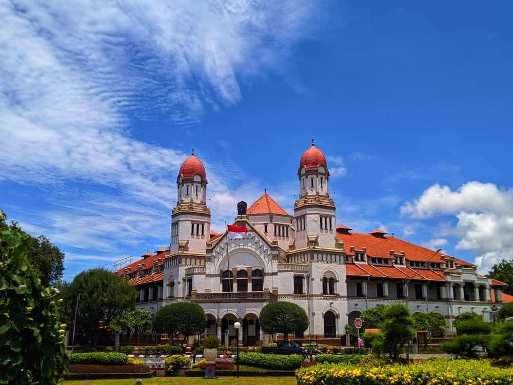
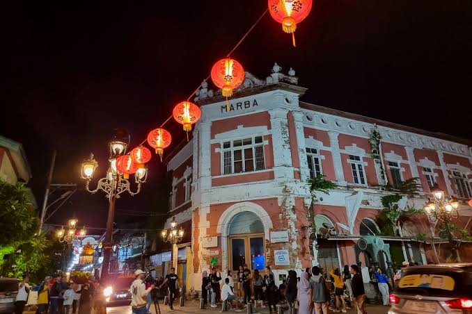
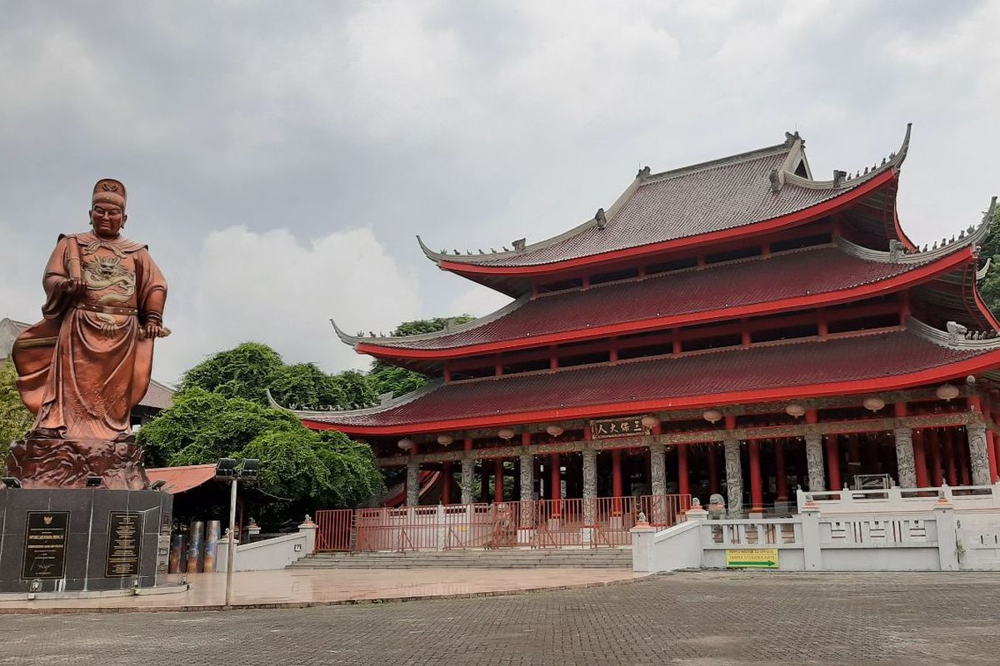
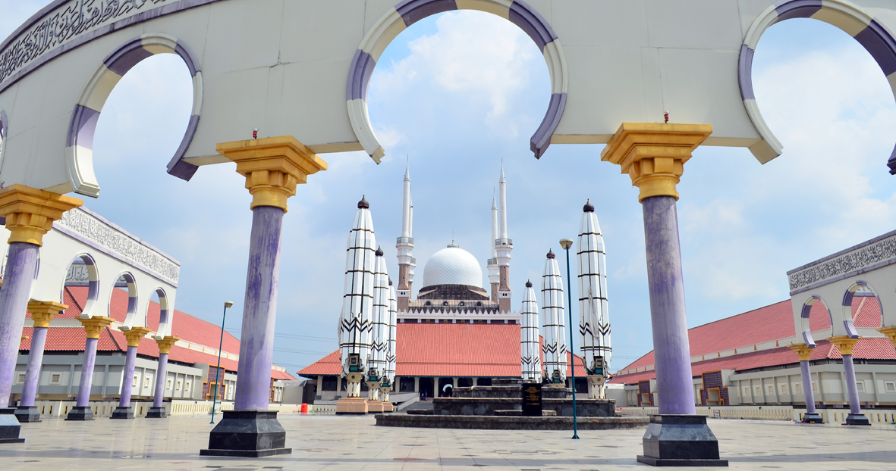
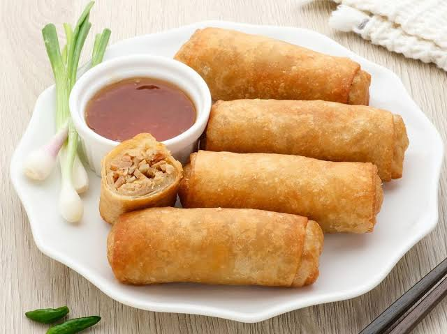

Tentang Semarang
Semarang adalah ibu kota Provinsi Jawa Tengah sekaligus salah satu kota metropolitan terbesar di Indonesia. Terletak di pesisir utara Pulau Jawa, kota ini memiliki perpaduan unik antara budaya Jawa, Tionghoa, dan warisan kolonial Belanda yang tercermin dari arsitektur bangunan-bangunan tuanya.
Semarang dikenal sebagai kota pelabuhan penting sejak masa kolonial, dan hingga kini menjadi pusat perdagangan, pendidikan, serta industri di Jawa Tengah.
Destinasi Wisata
Lawang Sewu

Bangunan bersejarah peninggalan Belanda yang dulunya menjadi kantor perusahaan kereta api. Dikenal dengan ratusan pintu dan jendelanya, menjadikannya salah satu landmark paling ikonik di Semarang.
Kota Lama Semarang

Kawasan bersejarah dengan gedung-gedung bergaya arsitektur Eropa yang telah direvitalisasi, sering dijuluki "Little Netherlands" karena suasananya yang khas.
Sam Poo Kong

Klenteng bersejarah yang dibangun untuk mengenang perjalanan Laksamana Cheng Ho (Zheng He), menjadi simbol akulturasi budaya Tionghoa dan Jawa di Semarang.
Masjid Agung Jawa Tengah

Masjid megah dengan payung raksasa mirip Masjid Nabawi serta menara Al Husna yang menawarkan pemandangan Kota Semarang dari ketinggian.
Kuliner Khas
- Lumpia Semarang
- Tahu Gimbal
- Wingko Babat
- Bandeng Presto
- Tahu Petis
- Nasi Ayam Semarang

Lumpia Semarang menjadi kuliner paling terkenal, berisi rebung, telur, dan daging yang dibungkus kulit tipis renyah. Kuliner khas ini merupakan hasil akulturasi budaya Tionghoa dan Jawa yang telah ada sejak abad ke-19.